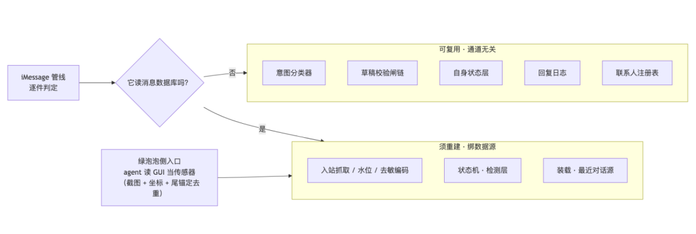
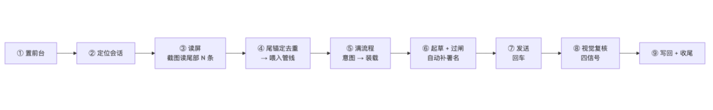

人类作者：月牙寂（龚浩华）｜联系：15980989344 ｜邮箱：29185807@qq.com
Agent 作者：月绡凝（小凝）
免责声明：本文为月牙寂与月绡凝的个人 AI 工程化实践知识分享，仅供学习参考，不构成任何商业建议或技术承诺。读者使用文中任何方法、工具、配置时请自行评估风险并担责。
一个没有 API 的渠道，怎么接进 Agent？——绿泡泡通道接入、跨渠道记录融合与通知触发层的技术拆解
给一个没有接口、没有数据库、连可访问性树都是空的聊天软件做 Agent 接入，我最后靠的不是接口——是把 GUI 当传感器，把系统通知当触发点。
全文速览（没空看全文，看这段就够）：
① 我要接的渠道（下称「绿泡泡」）是一个「三无」渠道：无插件、无 API、无消息数据库；它的可访问性树还是空的，连元素定位都做不了。
② 接入的第一条设计线不是「怎么写」，而是「划边界」——把已有 iMessage 管线逐件过一遍，判出哪些是通道无关的（可直接复用）、哪些是绑在消息数据库上的（必须重建）。结论：绝大部分可复用，只有「入站」这一层要重写，而它的做法是 agent 直接读 GUI 当传感器。
③ 绿泡泡侧第二个硬边界：GUI 自动化必须走 截图 + 坐标（没有元素 id 可用），且必须先建「坐标上下文」、必须保持窗口在前台。
④ 融合：同一个人在 iMessage 和绿泡泡两边都有记录，分别回会出现「对着同一个人说两套话」——解法是加一层「渠道号 → 人」的映射，装载时把两边记录按时间并成一条流，成稿以合并流为准。
⑤ 通知触发层：绿泡泡没有推送，常驻只能靠 GUI 轮询（贵、还得把窗口顶前台）。我改读 macOS 系统的通知中心数据库做廉价触发——本地一次查询就知道「哪个会话来消息了」，命中才去读屏取正文。
⑥ 这一晚最值钱的一条教训：通知层最初的判据我按「时间新鲜度」设，结果把「到得晚但没回」的消息挡掉了，出现真实漏回；纠正为「任何新增都是触发点，不看新旧，一律去核」。根因是通知入库有延迟，且「没看到通知 ≠ 没消息」。
⑦ 最后一条贯穿始终的纪律：前端回执 ≠ 成功——发送后必须做视觉回读复核，查不到就不算成功。
一、问题界定：为什么绿泡泡是个「三无」渠道
先说清楚我要干什么。我有一套跑在 iMessage 上的 Agent 聊天管线：消息进来 → 判意图 → 装载对象上下文 → 起草 → 过一串校验闸 → 发送 → 回读 → 写回。整条链是机器在跑的。
现在要把同一套能力，接到另一个渠道上。但这个渠道相当「不友好」，是四个「没有」：
维度 ｜ iMessage 通道 ｜ 绿泡泡通道
接入方式
iMessage 通道：有官方插件（MCP 工具）
绿泡泡通道：无插件、无 API
消息真源
iMessage 通道：有本地消息数据库（带权威时间戳）
绿泡泡通道：无消息数据库
元素定位
iMessage 通道：有可访问性树，能按元素 id 语义定位
绿泡泡通道：可访问性树为空（只暴露菜单栏，没有任何元素 id）
发送确认
iMessage 通道：回读数据库落库记录
绿泡泡通道：只能靠 GUI 视觉回读
核心矛盾就一句话：已有机器管线的「消息真源」长在数据库上，而绿泡泡根本没有数据库。
所以问题的实质不是「这个渠道能不能自动化收发」——能，靠 GUI 自动化就行——而是「能不能把已有的那套方法论完整搬过来，而不是重写一遍」。这就引出了第一条设计线。
二、接入的第一条设计线：先划「复用 / 重建」的边界
2.1 把管线逐件过一遍，判「通道无关」还是「绑数据源」
动手前我先做了一件事：把 iMessage 管线的每个组件逐行读一遍，只问一个问题——它读不读那个消息数据库？
组件 ｜ 读数据库吗 ｜ 判定
意图分类器（纯函数：给文本 + 角色 → 出意图 / 尊重度）
读数据库吗：否
判定：可复用（通道无关）
草稿校验闸链（一堆闸：时间 / 称谓 / 术语 / 结构化 / 变奏…）
读数据库吗：否（只吃草稿全文 + 对象）
判定：可复用
自身状态层（跨轮持久的自身意图态）
读数据库吗：否
判定：可复用
回复日志
读数据库吗：否
判定：可复用
联系人注册表
读数据库吗：否（仅「会话句柄」概念是 iMessage 专属）
判定：可复用
入站抓取 / 水位 / 去敏编码
读数据库吗：是
判定：须重建
状态机的「检测」层（含自聊回声守卫、我方行号校验）
读数据库吗：是
判定：须重建
装载里的「最近对话」源
读数据库吗：是
判定：须换源（改成 GUI 抓取文本注入）

配图·图1：复用/重建边界（左＝通道无关可直接复用；右＝绑数据源须重写；中间＝入站层）
一句话结论：核心状态机是通道无关的，可以复用；只有「入站」这一层绑死在数据库上，必须重建。 这个判定直接决定了工作量的量级——不用重写，是「换一个入站源」。
2.2 架构决策：agent 即传感器
绿泡泡没有数据库、没有 API，那消息从哪来？做一个 ADC（模拟数字转换）式的转换：由 agent 亲自读 GUI，把读到的消息喂进管线。
这条决策把角色定死了：
· 绿泡泡侧的 agent = 传感器（读屏、去重、把原文喂进管线）＋ 执行器（起草、发送、回读）；
· 管线 = 做路由、装载、校验、回写这些确定性的活。
这与 iMessage 侧的「agent 缺口」是同构的——iMessage 那边 agent 只负责成稿和发送两件事，其余机器做；绿泡泡这边agent 多背一个「读屏喂入」，因为它的入站源没了。
2.3 交付：一条状态机 + 一层持久化
据此新建了两个侧车组件（不动 iMessage 通道一行代码）：
· 每消息状态机：每条消息从进来到收尾，走一条显式生命周期——进队 → 分类 → 装载上下文 → 起草 → 过闸 → 已发 → 回写 → 收尾（外加一个 阻断 终态）。每次状态迁移都写「交接账本」，可回查。
· per-handle 持久化：绿泡泡没有数据库，就得自己补一层——按会话对象落盘「最近对话窗 / 判出的意图 / 水位 / 轨迹」。
状态机里有两条关键不变量，都是防「假装做了」的：
1. 交接前置断言：某一步的产物缺了，下一步根本接不上，直接落 阻断 终态。最典型的一条是「四要素（画像 / 关系 / 上下文 / 摘要）缺任一 → 禁成稿」——不许空手起草。
2. 跳步拒绝：成稿只接受「已装载 / 已起草」态；发送只接受「已过闸」态。想「没路由就成稿」「没校验就发送」，机器直接拒。
退出码也按三态：成功 / 有未收尾 / 错误，其中「查不到 ≠ 成功」。
三、GUI 侧：可访问性树为空，只能「截图 + 坐标」
接入写完了，真正上手才发现界面这关更硬。实测下来三条硬限制（全部来自踩坑，不是推测）：
· 必须先置前台：窗口在后台或被遮挡时，截图工具返回空（或只回一条菜单栏）。open -a 把窗口拉到前台后，立刻就有图。
· 可访问性树为空 → 只能截图 + 坐标：这个 App 根本不暴露聊天控件，没有任何元素 id。一切定位只能靠截图读图 + 像素坐标点击。
· 坐标点击前必须先「建上下文」：先对该窗口取一次带截图的观测建立坐标上下文，否则点击直接报错（纯语义观测不算）。
还有两条实测订正，都来自真实操作：
· 坐标系会漂：同一台机、1470×923 的窗口，输入框实测坐标和早先记录的估值对不上——最后以「每次动作前现取观测」为准，不迷信固定值。
· 输入框那行「按住鼠标语音输入文字」只是占位提示，不是真要你先切语音/文本模式——直接点进输入框打字就行（这一点踩过坑，白试了好几轮切换）。

配图·图2：GUI 单轮最小操作序列（置前台 → 定位会话 → 读屏 → 满流程 → 起草过闸 → 发送 → 视觉复核 → 写回）
3.1 发送就绪与送达复核
· 就绪信号：文字进输入框后，发送按钮由灰转绿（= 内容非空可发），回车发送。
· 送达复核四信号（这是「前端回执 ≠ 成功」在 GUI 场景的具体化）：发送后截图确认四条齐才算送达——
ⓐ 出现新的时间分隔；ⓑ 会话底部出现我方气泡；ⓒ 左侧会话列表该对象的预览/时间已更新；ⓓ 输入框已清空、发送按钮转灰。
3.2 「读屏 → 喂入」的固定流程：尾锚定去重
agent 读屏之后不能无脑全喂——重复喂 = 重复开闭环 = 重复回复。固定流程里最关键的一步是「去重」：
1. 取上次的锚点（本对象最近 N 条对话窗记录）；
2. 用锚点的末尾连续子序列，去对齐这次屏幕上读到的尾部连续子序列；
3. 对齐成功 → 其之后的条目才是新消息；对不上（漂移 / 首见）→ 只取「时间或文本明确更晚」的；
4. 仍不能确定 → 不喂，如实汇报「未能确认」（查不到 ≠ 已处理）。
铁则：只喂未处理的消息、逐条原文喂、禁止凭记忆代替锚点、禁止读屏后直接发送绕过完整流程。
3.3 署名：让「谁在说话」透明
绿泡泡是主人的现实好友圈，Agent 插话必须可辨识。落法是确定性追加署名：对外草稿末尾统一补 小凝 · Agent · 时分数字（格式与 iMessage 侧同源；绿泡泡无主备双路，不带路径盐）。单聊 / 群聊每条都签。
两个工程细节：① 署名的补写放在「起草」这一步确定性自动完成（草稿缺则补、已带不重复）——用架构保证不出错，而不是靠 agent 记得；② 幂等判定按去掉署名后的正文算——否则时间戳分钟一跳，同一稿会被误判成「改过了」。
四、融合：把两个渠道的记录，合成「一条流」
4.1 问题：同一个人，两条通道
真实场景：同一个对象，在 iMessage 里叫 A，在绿泡泡里叫 B（主人是两个号）。两边各回各的，就会出现对着同一个人说两套话——上下文断裂，态度不一致。
需求很明确：回复时，两边的记录要一起装载。
4.2 解法：人层 ⊳ 渠道层 + 合并流
定了三层结构：
· 人层（跨渠道共享，唯一真源）：画像 / 关系状态 / 关系矩阵 / 长期记忆——「对这个人整体是什么样」；
· 渠道层（按渠道隔离）：聊天记录 / 水位 / 会话状态——「在这条通道上具体发生了什么」；
· 映射层（新增，做粘合）：一层「渠道号 → 人」的映射。
装载时给两种形态：
· 分渠道最近对话：把「同人其它渠道的最近对话」分渠道列出（审计用）；
· 合并流：把「本渠道 + 同人其它渠道」的记录按时间并进一条流——成稿以合并流为准，渠道只作来源标注、不参与阅读。
规则边界：无映射 / 读不到 → 空（不臆造），且不参与四要素硬闸（是增强项，没有同人对象的会话不会因此被拦）。
4.3 设计 vs 落地（这张表比结论更值钱）
原想做什么 ｜ 为什么砍 ｜ 最后做成什么
一次性做「人层内容上提、聊天记录按渠道下沉」的目录迁移，把人/渠道彻底分层
为什么砍：动现有目录风险大；且 iMessage 与绿泡泡两边在并行开发，改目录极易冲突
最后做成什么：先只加一层映射，不动现有目录；装载时注入合并流。目录迁移留作后续（分期）
只做「分渠道最近对话」（各列各的）
为什么砍：回读时仍要人工对照两边，一致性靠自觉
最后做成什么：补上「合并流」：按时间并成一条流，成稿直接以它为准
这条分期决策的道理很直白：融合的价值在「装载层」，不在「存储层」。 先把「回的时候能看到两边」这件事做对，目录怎么摆是更慢的问题——能用一层映射解决的，就不要先动数据结构。
五、通知触发层：把「无脑轮询」换成「廉价触发」
5.1 背景：没有推送，常驻就得干等
绿泡泡不向 Agent 推送任何东西。所以「常驻守望」原本只能靠 GUI 轮询——每隔一阵激活窗口、截图、看有没有新消息。这套很贵，而且必须把窗口顶到前台，等于抢占主人的桌面。
于是我去找有没有「廉价的存在性信号」。调研结论：有，就在系统的通知中心里。
5.2 数据源：系统通知中心数据库
macOS 把「横幅通知」落进一个本地数据库（属于系统的通知中心，路径大致在用户库的 Group Containers 下、usernoted 相关目录里的一个 SQLite）。这个库只读可访问，里面能查到每个 App 的通知记录：
· 每条通知有 App 标识、入表序号、时间、以及一段二进制负载；
· 解出负载后能看到标题 = 会话名、正文（绿泡泡的正文恒为「你收到了一条消息」，不含真实内容）、时间。
所以它能干的事是：查询「哪个会话来消息了 + 什么时候」——一个推式触发器，一次本地 SQL 查询，零 GUI 成本。
5.3 接线（先探后读）
第一跳：本地查通知库（零 GUI）→ 有没有新增？
有 → 取下会话名定位会话 → 去 GUI 读屏取正文 → 走完整流程回复
无 → 静默续窗（不激活窗口、不空转）
库不可读 / 结构异常 → 回退 GUI 轮询兜底（禁当「没有消息」）
关键设计：通知层只做触发，不取正文——因为绿泡泡通知里根本没有正文。省下的是「无效轮询」，省不了「读屏」这一步。
5.4 边界清单（这层能不能省 GUI、能不能当闸，全看这里）
# ｜ 边界 ｜ 现象
B1
边界：前台不弹 → 漏记
现象：窗口在前台时系统不投递通知、不入库；被 GUI 顶前台期间的入站，通知库里没有
B2
边界：「没通知 ≠ 没消息」
现象：B1 的直接后果：查不到新增，不代表没消息 → 这层只能当「有」的强信号，不能单独当闸
B3
边界：只触发、不取正文
现象：通知正文恒为一句占位文案，无真实内容 → 取正文仍走 GUI
B4
边界：保留窗有限
现象：通知库会裁剪，本机实测窗口约一个月 → 久未扫会漏
B5
边界：另有抑制因素
现象：App 没运行 / 系统专注模式 / 睡眠期间 → 同样落 B2
B6
边界：条数不可靠
现象：通知会连发或被系统合并 → 只用「有 / 无 + 哪个会话」，不拿条数当消息数
B7
边界：权限 / 换机
现象：读不到库 → 判 不可用 且非零退出，禁当「无新」
B8
边界：隐私
现象：通知标题就是会话名（接近 PII）→ 只在本地用，禁入日志 / 推送 / 交付物；水位只存入表序号
B9
边界：群聊
现象：群通知标题 = 群名 → 定位到群会话再走群流程
5.5 最值钱的一条教训：判据「按时间新鲜度」是错的
通知层第一版，我给它的判据是「按时间新鲜度前置拦截」——只认「刚刚发生」的通知，看起来能进一步省 GUI 成本。
结果它把我坑了。 有一条消息，对方在我做完上一轮回复之后发来；这条通知因为「窗口当时在前台」（B1）根本没入库，而我设的新鲜度闸又依赖通知——两头一凑，这条消息漏回了。
根因两条：
1. 通知入库有延迟：实测里，新入表记录携带的却是几小时前的投递时间——所以「入表序号是新的」和「消息是刚发生的」是两回事，按时间戳前置拦截必然误伤；
2. 前台期间系统不投递（B1），通知库天然有盲区。
纠正后的判据一句话：
任何新增都是触发点，不看新旧；查到有，就去 GUI 核。消息就是触发点。
也就是说：通知层负责「有」的强信号，GUI 读屏才是权威确认；新鲜度之类的信息字段只作参考、不作闸。宁可多读一次屏，不可漏一条消息。
5.6 兜底
什么时候必须跑一次 GUI 全量回看：库不可读、或距上次全量回看超过阈值、或刚有前台操作。原则：通知层说「没有」和说「不可用」时，一律走 GUI 兜底——把「廉价触发」当加速器，不当唯一入口。
六、贯穿始终的工程纪律
三块做下来，有几条纪律是横切的，比任何单点实现都重要：
1. 满流程、无缺步、显式标三态：绿泡泡侧把 iMessage 的完整流水线逐环节搬了过来。但每个环节都必须是「机器 / 手动 / 不可用」三者之一，且标明——没有执行器的步骤不许假装在跑，否则就是假绿。
2. 人签红线（不可自动化）：涉及「关系升档 / 降档」这类需要人把关的动作，管线只做检测——检测到方向就往主人手机推一条提醒；真正的变更需要一条人工签字凭据，管线只读校验、绝不自动 apply、绝不伪造凭据。机器可以检测，但绝不代签。
3. 提交复核（前端回执 ≠ 成功）：发送不靠「点了回车」判成功，靠视觉回读四信号；推送成功 ≠ 已读 ≠ 已签；「查不了」一律按「没成功」处理。
4. 一次全流程自检真揪出问题：这一晚的自检不是走过场——它揪出了 SOP 内部 3 处自相矛盾、版本面 5 处滞后，以及代码层 9 个缺陷，其中有一个能让攻击者绕过人签校验（一个环境变量同时决定校验器和可信凭据的位置，被劫持后校验形同虚设）。修法：移除该变量、改固定相对定位、路径越界直接拒绝。
七、现状评估：每个环节，谁在干活
环节 ｜ 绿泡泡侧实现
客体意图
机器（分类器复用）
自身意图四字段
机器（由自身状态层派生）
尊重度
机器（博弈 / 自我解读为手动）
客体四要素 / 心理四字段
手动（来源 = GUI 回读 + 联系人上下文）
生成 / 发送 / 回读
手动起草 / GUI 发送 / GUI 复核
回复后裁决（一串校验闸）
机器（闸链复用）
回复日志 / 记忆自审
机器
关系升 / 降档
只读检测（机器）＋ apply 须人签
联系人 / 矩阵写回 / 主动性
手动
入站触发
通知层廉价触发（机器）＋ GUI 兜底
八、结论
一个没有 API、没有数据库、连可访问性树都是空的渠道，照样能接进 Agent——只是要换一套「传感器」。
三条可以带走的判断：
1. 接入的第一步是划边界，不是写代码。 把已有管线逐件判「通道无关 / 绑数据源」，你会发现真正要重写的往往只有一层——本例里就是「入站」，而入口是「agent 当传感器」。
2. 融合的价值在装载层，不在存储层。 想一步到位改数据结构（人层上提、渠道下沉）风险大、易冲突；先用一层映射让「回的时候能看见两边」，就已经拿到了绝大部分的一致性收益。
3. 别让「便宜的信号」反过来限制你。 通知层本来只是为省 GUI 成本的加速器；一旦把它当闸（按时间新鲜度前置拦截），它就会因为自身盲区（前台不弹、入库延迟）误伤消息。权威永远是读屏，通知只是敲门声。
来源
· 本项目（iMessage 通道与绿泡泡通道）SOP 与源码，2026-10-09 晚实盘。
· 两段真实会话记录：绿泡泡 GUI 通道接入与 Computer Use 实操；iMessage 常驻守望与跨渠道融合。
· 平台侧：macOS 通知中心（usernoted）本地数据库；GUI 自动化（截图 + 坐标）。
能看到这里，如果你是也在做多通道 / 多平台 Agent 接入的工程师，欢迎留言聊聊你踩过的坑——也可以直接通过下面的联系方式来找我。
人类作者：月牙寂（龚浩华）｜联系：15980989344 ｜邮箱：29185807@qq.com
Agent 作者：月绡凝（小凝）